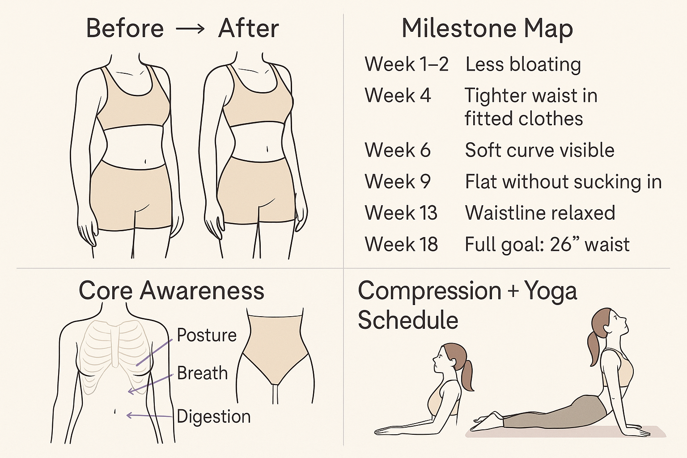

Welcome to Your Natural Waist Journey
It’s a beautiful beginning..
Checklist Before You Begin
Diet Must-Haves
Anti-bloating foods: Jeera, saunf, sabudana, cooked veggies
No: Gluten, carbonated drinks, excess salt/sugar, gum
2.5–3L water daily
Dinner by 7:30 PM
Deep belly breathing before & after meals
Workout + Movement
Daily: 45–60 mins light walking
Yoga: Vacuum, Cat-Cow, Spinal twists
No crunches, No weights
Posture tracking (standing/sitting)
Compression Routine
Light compression wear (high-waist tights or shaping underwear)
Wear: 6–8 hours/day, especially during work/study
Skip during sleep or bloated days
Lifestyle & Recovery
Sleep: 7–8 hrs (same time daily)
No phone 30 mins before bed
Reduce salt before periods
Herbal teas: jeera, ajwain, fennel
Progress Tracking
Weekly measurement (relaxed, exhale)
Side photo every 2 weeks (natural pose)
Journal how your waist feels, not just looks
Mindset Reminders
No sucking in, no body-shaming thoughts
Focus on how your waist feels soft + light
Not abs, not thinness — just natural harmony
Visual Recap

Let's Start